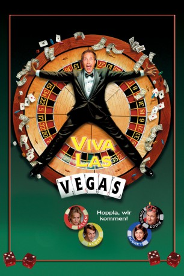
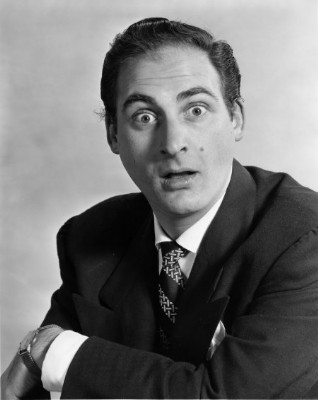
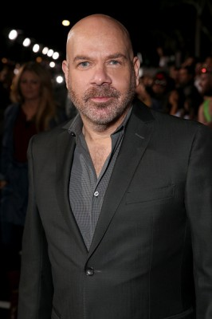
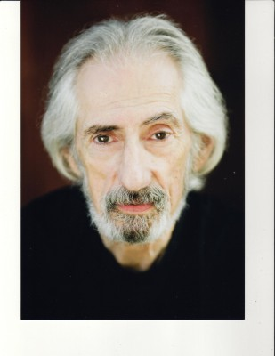
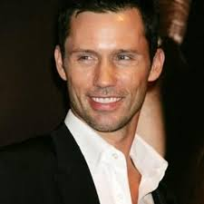

#4799 Die Schrillen Vier in Las Vegas
Alternativ: Vegas Vacation
 
 IMDB-Wertung: 5.9 / 10
IMDB-Wertung: 5.9 / 10  Metascore: 0
Metascore: 0 
Das Chaos-Quartett ist wieder da! Diesmal verbringen die Griswolds ihren Urlaub im grellen Mekka von Strapsen und Spielautomaten, in Las Vegas. Doch kaum im wilden Zockerparadies angekommen, trennen sich zunächst die Wege: Papa Griswold verspielt die Reisekasse, Tochter Audrey landet in einem Nachtclub-Käfig, Mutter Ellen erliegt dem Charme eines Schmusebarden und für richtig Wirbel sorgt der Sohnemann…
Jahr: 1997
Dauer: 94 Minuten
FSK: 6
Land: USA Studio: Warner Bros.Tonspuren: DD2.0 - ,
Untertitel:
Auflösung: 1080p (1920x1080) Größe: 19968 MB
Genre: Komödie, Familie
Regisseur: Stephen Kessler
Drehbuch: Charles Belden
Soundtrack:
Darsteller:
 Chevy Chase als Clark Griswold
Chevy Chase als Clark Griswold Beverly D'Angelo als Ellen Griswold
Beverly D'Angelo als Ellen Griswold Randy Quaid als Cousin Eddie
Randy Quaid als Cousin Eddie Ethan Embry als Rusty Griswold
Ethan Embry als Rusty Griswold Marisol Nichols als Audrey Griswold
Marisol Nichols als Audrey Griswold- Shae D'lyn als Cousin Vicki
 Wayne Newton als Wayne Newton
Wayne Newton als Wayne Newton Wallace Shawn als Marty
Wallace Shawn als Marty-  Sid Caesar als Mr. Ellis
 Julio Oscar Mechoso als Limo Driver
Julio Oscar Mechoso als Limo Driver- Sly Smith als Mirage Security Guard
 Julia Sweeney als Mirage Reception Person
Julia Sweeney als Mirage Reception Person- Corinna Harney als Girl at Blackjack Table
- Christie Brinkley als Woman in Ferrari
- Juliette Brewer als Cousin Ruby Sue
- Zach Moyes als Cousin Denny
 John Finnegan als Arty, the Hoover Dam Guide
John Finnegan als Arty, the Hoover Dam Guide- Maria Cina als Mirage Cashier
- Shannah Laumeister als Mariah
- Bud Ekins als O'Shea Security Guard
- Gary Devaney als Croupier #2
 Jerry Weintraub als Jilly
Jerry Weintraub als Jilly S.A. Griffin als Pit Boss
S.A. Griffin als Pit Boss- Lou DiMaggio als Casino Host
-  Jason Stuart als Buffet Manager
- Clinton Brandhagen als Valet
- Hayley Mortison als Girl in Hot Tub
 Rusty Meyers als Club Manager
Rusty Meyers als Club Manager- Billy Morrissette als Paramedic #1
-  Larry Hankin als Preacher
- Alana Austin als Tourist , uncredited
- Vanessa Bednar als Hot Pool Model , uncredited
- Colleen Ann Brah als Wayne Newton Show Fan , uncredited
-  Jeffrey Donovan als Hotel Employee , uncredited
 Toby Huss als Fake I.D. Salesman , uncredited
Toby Huss als Fake I.D. Salesman , uncredited Frank Patton als Hustler , uncredited
Frank Patton als Hustler , uncredited Miriam Flynn als Cousin Catherine
Miriam Flynn als Cousin Catherine- Siegfried Fischbacher als Himself
- Roy Horn als Himself
- Joe Armeno als Roulette Stickman
- Seth T. Walker als Bellman
- Howard Platt als Maitre d'
- Elizabeth Illia als Woman at Concert
- Wayne Brown als Croupier
- Wendy Kaufman als Wendy
- Joe Lacoco als Riviera Bartender
- David L. Garoutte als Riviera Security Guard
- C.C. Costigan als Kelli
- Peter George als Marcus
- Frank Mendonga als Kurt
Datei: X:\5-Pentalogie(A-Z)\Griswold\Schrillen Vier in Las Vegas, Die (1997, FSK6, 1920x1080).mkv seit 18.11.2016
Festplatte: HD Collection-3(N-Z)-6(A-Z)
 Es gibt insgesamt 8 Filme in der Gruppe '5-Pentalogie(A-Z)\Griswold'
Es gibt insgesamt 8 Filme in der Gruppe '5-Pentalogie(A-Z)\Griswold'